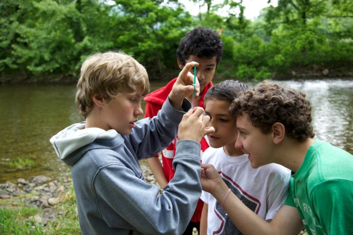

{kind=link}
Situé au coeur de la métropole Aix-Marseille-Provence, ce monument naturel comprend des massifs littoraux découpés de calanques, ainsi qu’un vaste espace marin qui, avec le canyon de la Cassidaigne, inclut l’un des plus riches canyons sous-marins de Méditerranée en matière de biodiversité
Faire une donation

Le Parc national des Cévennes est composé de 122 communes, dont 48 ont une partie de leur territoire dans le cœur, 113 ont adhéré à la charte, soit un taux d’adhésion de 92 %.
Inscription en ligne
Biche
Parc national #1
Plus vaste parc national de France et de l’Union européenne, le territoire du Parc amazonien de Guyane couvre 40 % de la Guyane française.Il est délimité par deux grands fleuves : l’Oyapock, frontière avec le Brésil, et le Maroni, frontière avec le Suriname. Le Parc national protège l’une des zones à plus forte biodiversité de la planète, des modes de vie uniques et les activités humaines des habitants des fleuves et de la forêt. C’est le lieu de vie des Amérindiens Apalaï, Tilïo, Wayana, Wayãpi et Téko, ainsi que des Aluku, Noirs marrons du Maroni, des créoles et des métropolitains.Aux paysages d’une grande diversité s’ajoute une palette de milieux rares : savanes-roches, inselbergs (imposants massifs rocheux) et monts forestiers situés à plus de 500 m d’altitude. La flore guyanaise compte plus de 5 800 espèces : orchidées, fougères, lianes, palmiers, ainsi que plus de 1 500 espèces d’arbres dont certains culminent à plus de 50 m.La faune est également exceptionnelle : 400 espèces de poissons d’eau douce (40 % de taux d’endémisme), 192 espèces de mammifères, 261 espèces de reptiles et d’amphibiens, 719 espèces d’oiseaux et des centaines de milliers d’insectes

Parc national #2
Premier parc marin créé en Europe, le Parc national de Port-Cros est constitué de l’île de Port-Cros et des espaces naturels propriétés de l’État, de l’île de Porquerolles (pour la partie coeur) et de cinq communes signataires de la charte : La Garde, Le Pradet, Hyères-les-Palmiers, La Croix-Valmer et Ramatuelle (pour l’aire d’adhésion). Escale privilégiée pour les oiseaux migrateurs, il est un lieu de vie pour des oiseaux rares en Méditerranée, comme les puffins. Le territoire abrite également des espèces terrestres endémiques comme le discoglosse sarde et le phyllodactyle d’Europe.Le milieu marin tire son originalité de ses paysages sous-marins : l’herbier de posidonie et le coralligène, habité par plus de 180 espèces de poissons et de nombreux invertébrés qui y trouvent refuge. Si le seigneur des lieux reste le mérou brun, on y trouve également des grands carnassiers tels que le chapon et le barracuda. Le Parc national possède un patrimoine historique considérable, illustré par des vestiges romains, une trentaine d’épaves et une vingtaine de forts militaires.Le Parc national de Port-Cros administre le Conservatoire botanique national méditerranéen de Porquerolles chargé de la sauvegarde de la flore sauvage de Méditerranée. Il anime la partie française du Sanctuaire Pelagos pour la protection des mammifères marins

Parc national #3
La Réunion s’inscrit dans la continuité des politiques publiques en faveur de la préservation et de la valorisation des Hauts de l’île. Depuis 2010, la totalité de son coeur est inscrite au patrimoine mondial de l’Unesco sous l’appellation « Pitons, cirques et remparts ». Apparue il y a seulement trois millions d’années, l’île de La Réunion abrite deux massifs volcaniques, dont l’un des volcans les plus actifs de la planète : le Piton de la Fournaise. Le coeur du Parc national offre une mosaïque de paysages naturels grandioses, construits par les éruptions volcaniques successives et façonnés par les effondrements et l’érosion. Il abrite plus de 110 types d’habitats, du littoral à l’altimontain (jusqu’à 3 070 m d’altitude), en passant par des forêts sèches, tropicales humides, des pandanaies ou des tamarinaies.Côté faune, ce sont les oiseaux les plus visibles : une centaine d’espèces dont certains endémiques et uniques au monde (le tuit-tuit, l’oiseau la Vierge ou « zoizo » la Vierge…). S’ajoutent quelques espèces remarquables de reptiles et plus de 2 000 espèces d’insectes. Le Parc national de La Réunion figure parmi les 34 hauts lieux de la biodiversité mondiale. Le coeur abrite également des zones habitées (îlets de Mafate et des Salazes), mais aussi quelques élevages de bovins et des espaces sylvicoles